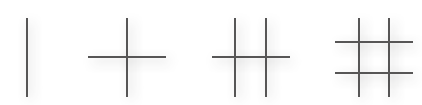
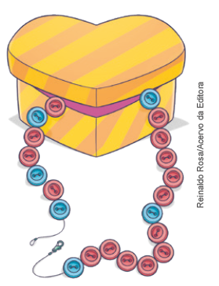
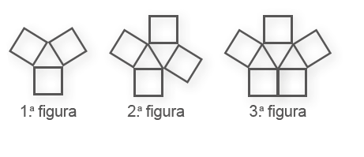
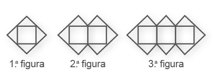
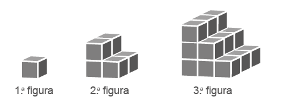
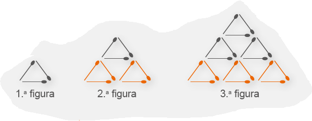

Introdução à unidade
No início desta coleção, pretende-se fazer um resgate dos conhecimentos prévios dos alunos sobre os sistemas de numeração estudados em anos anteriores e, a seguir, apresentar novos conceitos, muitos dos quais já são do conhecimento dos alunos. Sendo assim, é importante propor debates e questionamentos para verificar o nível de conhecimento da turma sobre os conceitos apresentados.
A seguir, relacionamos os objetivos que se pretende atingir ao estudar os conceitos desta unidade.
Capítulo 1 – Números naturais
Objetivos:
► Identificar como são formadas as sequências numéricas ou figuradas e descobrir o seu padrão.
► Compreender que a sequência dos números naturais é infinita.
► Reconhecer a função social de um número.
► Identificar o sucessor e antecessor de um número natural.
Capítulo 2 – Sistemas de numeração
Objetivos:
► Conhecer alguns sistemas de numeração usados pelas civilizações antigas e compará-los com o nosso.
► Transcrever os números do sistema de numeração babilônico, egípcio e romano para o nosso sistema e vice-versa.
UNIDADE 1 - A matemática no cotidiano
Cataratas do Iguaçu, PR, 2017.10
10
Capítulo 3 – Sistema de numeração indo-arábico
Objetivos:
► Reconhecer o Sistema de Numeração Decimal como o sistema utilizado no dia a dia.
► Identificar o valor posicional de um algarismo de acordo com a posição que ele ocupa no número.
► Ler e escrever os números do nosso sistema de numeração.
Capítulo 4 – Geometria: noções iniciais
Objetivos:
► Identificar formas planas e não planas.
► Reconhecer poliedros e corpos redondos.
► Identificar e classificar os poliedros de acordo com seu número de faces.
► Identificar e desenhar vistas de um sólido geométrico.
Probabilidade e estatística – Organizar, ler e interpretar dados em tabelas
Objetivos:
► Analisar e interpretar informações apresentadas em tabelas.
► Organizar dados coletados em uma tabela de dupla entrada.
flavio10rs/Pixabay
A Matemática está presente em várias situações no nosso cotidiano. Pode, por exemplo, nos ajudar a entender melhor a cidade em que vivemos.
Veja algumas informações sobre Foz do Iguaçu e seus pontos turísticos.
► De acordo com o Censo de 2010, a população era de 256 088 habitantes.
► O Parque Nacional do Iguaçu possui mais de 600 mil hectares de áreas protegidas e outros 400 mil em fl orestas ainda primitivas.
► A Usina Hidrelétrica de Itaipu foi construída para reter o curso do Rio Paraná. A barragem é uma imensa estrutura de concreto sobre a qual estão instalados os dutos e as unidades geradoras de energia elétrica.
► O Parque das Aves apresenta mais de 800 animais.
► Em 2019, Foz do Iguaçu foi a 4.ª cidade do país mais visitada por estrangeiros.
CONVERSE
1. No texto acima, há várias informações numéricas sobre Foz do Iguaçu. O que esses números representam?
Discutir com os alunos o signifi cado dos números que aparecem no texto. Por exemplo, os números 256 088 e 800 representam quantidades, já os números 2019, 600 mil hectares e 400 mil hectares representam medidas. O número 4 indica uma ordem. Mostrar a eles como os números estão presentes no cotidiano com informações importantes.
2. Você conhece alguma informação numérica sobre a cidade onde mora?
Verifi car com os alunos se eles conhecem alguns números referentes à cidade em que moram.
3. Ao observarmos a fotografi a da Usina de Itaipu, podemos perceber que sua construção lembra algumas fi guras geométricas não planas. Em sua cidade há monumentos que lembram fi guras geométricas não planas?
Discutir com os alunos se na cidade em que moram eles podem citar algumas construções nas quais identifi cam a presença das formas geométricas.
11
Orientações específicas
Na abertura da unidade, são apresentadas algumas informações sobre a cidade turística de Foz do Iguaçu e vários contextos em que os números são utilizados, ora para representar uma quantidade ou uma medida, ora para representar uma ordem. Na imagem da Usina de Itaipu, pode-se explorar a presença das formas geométricas. O objetivo, nesse momento, é instigar a curiosidade dos alunos e mostrar que a Matemática pode estar presente nas informações de situações do cotidiano. É possível aproveitar o momento para solicitar aos alunos que identifiquem quais números representam uma
quantidade, quais representam uma medida e quais representam uma ordem, verificando, ainda, se eles reconhecem qual o sistema de medida que está sendo usado. No caso das formas geométricas, pode-se propor uma discussão sobre as formas geométricas que eles identificam nas construções da cidade em que moram e também apresentar algumas informações numéricas sobre a sua cidade. Os alunos precisam usar com autonomia o raciocínio matemático para o entendimento do mundo que os cercam, compreendendo as informações referentes ao local onde vivem.
11
| Principais habilidades da BNCC | EF06MA01 |
|---|---|
| Competências | Competências G1, CG9, CE2, CE8 |
No início deste capítulo, são apresentadas algumas sequências para que o aluno possa identificar os seus padrões. O objetivo, nesse momento, é promover uma discussão sobre os padrões observados.
Sequências
Nas duas primeiras sequências, é possível solicitar aos alunos que escrevam o número que representa a quantidade de bolinhas que compõem cada figura. Questione-os para que percebam algum padrão entre os números que as compõem.
No caso da 1.ª sequência, os números são: 1, 3, 6, 10, 15, 21, ... Essa é a sequência dos números triangulares.
No caso da 2.ª sequência, os números são: 1, 4, 9, 16, 25, 36, ... Essa é a sequência dos números quadrados.
Nesse momento, pergunte aos alunos se 8 pode ser um número quadrado. Para saber a resposta, eles poderão fazer desenhos e verificar que 8 não é um número quadrado, porque não é possível formar um quadrado com 8 bolinhas.
EF06MA01
CAPÍTULO 1 - Números naturais
Sequências
Ao observar ao nosso redor, podemos perceber que algumas situações obedecem a um padrão, que pode ser representado de várias formas.
Veja a seguir alguns exemplos nos quais podemos encontrar um padrão nas sequências apresentadas.
► 1ª sequência
Ver Sequência
► 2ª sequência
Ver Sequência

1. Troque ideias com seus colegas e professor e, no caderno, representem a próxima sequência em cada uma das situações. Anote também as conclusões a que vocês chegaram.
Também é possível determinarmos sequências numéricas, ou seja, números que apresentam um determinado padrão de um termo para o outro.
Observe:
► 1ª sequência numérica
1, 3, 5, 7, 9, 11, 13, ...
► 2ª sequência numérica
0, 2, 4, 6, 8, 10, 12, ...
► 3ª sequência numérica
1, 8, 15, 22, 29, 36, 43, ...
2. Troque ideias com seus colegas e professor e responda às questões a seguir em seu caderno.
a) Quais os próximos dois termos de cada uma das sequências acima?
b) Como é chamada a 1ª sequência numérica apresentada? E a 2ª?
Uma sequência pode ser finita quando parar num determinado termo, ou infinita quando continuar indefinidamente. Nesse caso, usa-se reticên-cias para indicar que o padrão segue se repetindo.
UNIDADE 1 - CAPÍTULO 1
12
Nas sequências numéricas, espera-se que os alunos sejam capazes de reconhecer os padrões numéricos e identificar que a 1.ª sequência é formada por números ímpares e a 2.ª por números pares. Esses conceitos já foram estudados em anos anteriores, por isso pretende-se, nesse momento, fazer um resgate dos conhecimentos dos alunos. O trabalho com sequências permite que os alunos possam desenvolver um olhar para determinar os padrões e posteriormente procurarem por uma generalização ou uma relação algébrica que mostrará qual o elemento do padrão que ocupará qualquer lugar da sequência. O pensamento algébrico pode contribuir enormemente para o desenvolvimento do pensamento computacional. Esses tipos de atividades permitirão que os alunos, futuramente, possam fazer abstrações com base em situações concretas, generalizando, organizando e representando de forma adequada suas ideias matemáticas.
12
Sequências dos números naturais
Para iniciar o estudo dos números naturais, apresenta-se uma situação relacionada ao portão de embarque em um aeroporto. Nela, é possível identificar as funções sociais de um número. De acordo com Panizza (2006), é fundamental que se proponha aos alunos situações didáticas nas quais os números aparecem como ferramentas de resolução em contextos diversificados. Quais são esses contextos de utilização? Para que servem os números? Como e quando são usados? Parra e Saiz (1992) exemplificam:
Como memória da quantidade. Os números dão a possibilidade de recordar uma quantidade, embora esta não esteja presente. Por exemplo, quando se pede a um aluno que busque em um armário a quantidade de tesouras necessárias para que cada um dos integrantes de sua mesa tenha uma, ele poderá realizar diversos procedimentos. Levar, em tantas viagens quantas sejam necessárias, uma tesoura por vez até completar a distribuição; apanhar várias tesouras ao acaso sem prever se vão ser suficientes ou vão sobrar; ou contar quantas crianças há em sua mesa, incluindo também ele, reter o último número enunciado, dirigir- -se ao armário e fazer a conta das tesouras necessárias. Nesse último caso, pôs em prática o aspecto cardinal do número, o número como memória de quantidade. Como memória de posição. Os números também permitem recordar a posição de um elemento dentro de uma série ordenada sem que seja preciso repetir toda a série. Por exemplo, se os armários da sala estão numerados, a criança que tem o armário 7 não precisa procurar começando do número 1, mas pode dirigir-se diretamente ao número que designa a posição na qual vai colocar sua mochila. Se os livros da biblioteca da sala estão numerados, um fichário que indique o título que corresponde a cada número facilitará a procura do livro desejado e a ordem posterior. Nos dois casos aparecerá o número em seu aspecto ordinal.EF06MA01
Sequência dos números naturais

Os números estão presentes em vários momentos do nosso cotidiano. No contexto acima, podemos identificar exemplos nos quais os números foram usados para expressar situações distintas.

1. Troque ideias com o seu colega e com o professor, em seguida responda às questões a seguir em seu caderno.
a) Na situação apresentada, que valor expressa uma medida?
a) 16:00 e 17:00 expressam medida de tempo. Sendo que 16:00 representa a hora no momento e 17:00 a hora do voo.
b) Em que momento um número foi usado para indicar uma quantidade?
b) O número 5 foi usado para representar a quantidade de passageiros para o embarque preferencial e o número 3 940 para expressar um código, que representa a identifi cação do voo.
E um código?
c) Em que momento o número representa uma situação de ordem?
c) No momento em que a senhora diz que seu fi lho é o 3.o passageiro da fi la. Nesse caso, representa-se um aspecto ordinal do número.
Podemos usar os números naturais para representar uma quantidade, um código, uma ordem ou uma medida.
A sequência dos números naturais é representada por: 0, 1, 2, 3, 4, 5, 6, 7, 8, 9, 10, 11, 12, 13, 14, ...
Na sequência dos números naturais, o antecessor é o que vem imediatamente antes de um número e o sucessor é o que vem imediatamente depois.
Todo número natural, com exceção do zero, tem um antecessor.
Observe:
► O antecessor de 8 é 7.
► O sucessor de 12 é 13.
UNIDADE 1 - CAPÍTULO 1
13
Após explorar a situação inicial apresentada, solicite aos alunos outras situações em que aparecem números naturais e verifique se eles identificam a sua função social. Vale lembrar que, às vezes, os números indicam uma medida, porém nem toda medida é representada por um número natural. O mesmo pode acontecer quando um número representar um código.
13
Representar, comparar e ordenar números naturais
Nesse momento, os alunos serão motivados, com o uso da reta numérica, a representar, comparar e ordenar números naturais, contemplando assim a habilidade EF06MA01, prevista na BNCC.
EF06MA01
2. Descubra qual o número que cada um está pensando. Depois, registre-os em seu caderno.

O sucessor de 999.
1 000
O antecessor de 511.
510
O sucessor do sucessor de 698.
700
O antecessor do antecessor de 801.
799
Representar, comparar e ordenar números naturais
Os números naturais podem ser representados em uma linha reta deno-minada reta numérica. Observe a seguir.
0, 1, 2, 3, 4, 5, 6, 7, 8, 9, 10, 11
Nessa forma de representação, cada número natural corresponde a um ponto que, a partir do zero, está separado do anterior por distâncias iguais.
Nesse caso, é possível visualizar facilmente as relações maior que (>), menor que (<) ou igual a (=) entre dois números naturais quaisquer. Note que o número que se encontra à esquerda é sempre menor que o número da direita.
3. Em seu caderno, substitua cada quadradinho por um dos símbolos =, > e > , = tornando a sentença verdadeira.
a) 35 ■ 53
<
b) 89 ■ 89
=
c) 730 ■ 73
>
d) 145 ■ 154
<
e) 231 ■ 241
<
f) 341 ■ 341
=
Números consecutivos
Na sequência dos números naturais, são chamados de consecutivos dois ou mais números seguidos, por exemplo: 13, 14 e 15. No quadro a seguir, em cada linha, temos representados 3 números consecutivos. Observe o modelo.
| 355 | 356 | 357 |
4. Agora, em seu caderno, copie o quadro, substituindo o símbolo ■ com os números que estão faltando. Considere que as letras representam um número natural diferente de zero.
| 521 | ■ 522 | ■ 523 |
| t | ■ t + 1 | ■ t + 2 |
| ■ 1 999 | 2000 | ■ 2 001 |
UNIDADE 1 - CAPÍTULO 1
14
14
Encontre soluções
Nesta seção serão apresentadas atividades variadas para serem resolvidas de forma individual ou em duplas. As questões dessa seção permite verificar se os alunos utilizam conhecimentos matemáticos já obtidos para auxiliá-los, ampliando as diferentes categorias de raciocínio lógico-matemático, o senso de investigação, e especialmente, a capacidade de argumentar, de modo a contemplar a Competência específica de Matemática 2.
Atividade 9
Objetivos:
Professor, verifique como os alunos representam os espaços entre os números. Lembre-os de que os espaços entre os pontos representados devem ser iguais.
EF06MA01
ENCONTRE SOLUÇÕES
1. Observe a sequência de figuras.
► Desenhe, no caderno, a próxima figura dessa sequência.
2. Observe o colar de Márcia que é formado por botões e responda às questões no caderno.
a) Dos botões que estão dentro do porta-joias, quantos são azuis? E vermelhos?
1 botão azul e 6 botões vermelhos.
b) Quantos botões vermelhos formam esse colar? E azuis?
Azuis: 7 botões;
Vermelho: 21 botões.
c) O colar é formado de quantos botões ao todo?
28 botões.
3. Observe a sequência de símbolos a seguir e escreva, no caderno, os próximos quatro símbolos dessa sequência.
# * = @
4. Observe as sequências de figuras a seguir.
a)
5 triângulos e 7 quadrados
► Quantos triângulos terá a 5ª figura dessa sequência? E quantos quadrados?
b)
► Quantos quadrados terá a 5ª figura dessa sequência? E quantos triângulos?
5 quadrados e 12 triângulos.
5. Nas figuras a seguir, os sólidos são formados por cubinhos.
► Quantos cubinhos formará a 4ª figura?
40 cubinhos.
6. Observe as sequências numéricas a seguir e escreva, no caderno, os dois próximos termos de cada uma.
a) 1, 1, 2, 1, 3, 1, 4, 1, 5, 1, 6, 1, ...
7, 1
b) 0, 8, 16, 24, 32, 40, 48, 56, ...
64, 72
c) 3, 7, 12, 18, 25, 33, 42, 52, ...
63, 75
d) 47, 42, 37, 32, 27, 22, 17, ...
12, 7
7. Responda no caderno:
a) É possível escrevermos o menor de todos os números naturais? Qual?
Sim. O número zero.
b) É possível escrevermos o maior de todos os números naturais? Por quê?
Não, pois os números naturais são infi nitos.
c) Qual o único número natural que não possui antecessor?
O número zero.
8. No caderno, escreva por extenso cada expressão.
a) 12 > 10
a) doze é maior do que dez.
b) 46 = 46
b) quarenta e seis é igual a quarenta e seis.
c) 67 < 69
c) sessenta e sete é menor que sessenta e nove.
9. Desenhe, no caderno, uma reta numérica e represente os números a seguir.
3, 5, 7, 8, 11
UNIDADE 1 - CAPÍ TULO 1
15
15
Atividade 11
Inicialmente, escrevemos os números de 0 a 9 no sentido anti- horário a partir de qualquer círculo. A seguir, subtraímos 1 dos números ímpares e somamos 1 aos números pares. Observando a figura tem-se que a maior soma que se pode obter é 8 + 9 + 6 = 23.
Atividade 12
1.ª figura formada por 1 triângulo;
2.ª figura formada pelo triângulo da figura 1 mais 2 triângulos: 1 + 2 = = 3 triângulos;
3.ª figura formada pelos 3 triângulos da figura 2 mais 3 triângulos: 3 + 3 = = 6 triângulos;
4.ª figura formada pelos 6 triângulos da figura 3 mais 4 triângulos: 6 + 4 = = 10 triângulos;
5.ª figura formada pelos 10 triângulos da figura 4 mais 5 triângulos: 10 + 5 = = 15 triângulos.
Como cada triângulo é formado por 3 palitos, então a 5.ª figura terá 15 ∙ 3 = = 45 palitos.
EF06MA01
10. Leia o texto a seguir e depois responda às questões em seu caderno.
Tartarugas da Amazônia são protegidas de extinção em 40 anos do
PQA
Brasília (30/12/2019) - Medidas protetivas adotadas há 40 anos no
âmbito do Programa Quelônios da Amazônia (PQA) vêm mantendo a
tartaruga-da-amazônia ( Podocnemis expansa)
e o tracajá ( Podocnemis unifilis) fora da
lista de animais brasileiros em risco de extinção.
Nesse período, mais de 80 milhões de filhotes de quelônios amazônicos foram protegidos de fatores como a exploração econômica predatória e a destruição de habitats. O número é resultado de ações como manejo, monitoramento, fisca-lização e pesquisa com animais realizadas conjuntamente por analistas e fiscais ambientais, população ribeirinha e instituições parceiras.
Para o coordenador-geral de Gestão da Biodiversidade, Florestas e Recupe-ração Ambiental do Ibama, Rodrigo Dutra, o programa também proporcionou a regulamentação da instalação de criadouros comerciais de tartarugas-da-amazônia e tracajás em suas áreas naturais de ocorrência. “Além disso, o PQA regulamentou o comércio dessas espécies, quando oriundas de cativeiro autorizado, utilizando-se da premissa do uso sustentável da fauna como forma de gerar alternativa de renda e auxiliar na redução da exploração ilegal dos quelônios amazônicos”, disse Dutra.
[…]
TARTARUGAS da Amazônia são protegidas de extinção em 40 anos do PQA. Ibama, dezembro de 2019. Disponível em: http://www.ibama.gov.br/ulti-mas-2/2102-tartarugas-da-amazonia-sao-protegidas-de-extincao-em-40-anos-do-pqa. Acesso em: 9 mar. 2022.
a) Sobre o que trata o texto?
O texto trata sobre a proteção de extinção de tartarugas da Amazônia.
b) Você acha importante que esse tipo de proteção seja realizado? Por quê?
Resposta pessoal.
c) No texto, os números naturais assumiram que funções?
Expressar data, expressar período de tempo e quantifi car os fi lhotes que foram protegidos.
d) Quais os números naturais citados no texto?
12, 30, 40, 2019, 80 000 000.

(OBMEP) Escreva os números de 0 a 9 nos círculos, de forma que eles cresçam no sentido anti-horário. Em seguida, subtraia 1 dos números ímpares e some 1 aos números pares. Escolhendo três círculos consecutivos, qual é a maior soma que se pode obter?

a) 19
b) X 21
c) 23
d) 24
e) 25
12. (OBMEP) Renata montou uma sequência de triângulos com palitos de fósforo, seguindo o padrão indicado na figura. Quantos palitos ela vai usar para construir o quinto triângulo da sequência?
a) 36
b) 39
c) 42
d) X 45
e) 48
UNIDADE 1 - CAPÍTULO 1
16
16